Atelier Topic Modeling
Découvrir Bertopic et le pouvoir des encodeurs
2026-07-05
Objectifs
- Un package Python spécifique : Bertopic
- Prétexte de parler des LLMs et de la représentation sémantique
- Et mettre la main à la pâte
- Appréhender la pipeline et se familiariser avec les grandes étapes
- Identifier les lignes de codes clefs
- Identifier les ressources de formation disponibles
Une réflexion initiée autour d’un tutorial The General Inquirer in the time of LLMs: a BERTopic tutorial
Petit tour de table
Qui a déjà fait du topic modeling ? Qui a de l’expérience avec les méthodes de NLP ?
Qui a des notions en Python ?
Qui est à l’aise avec un notebook ?
Avez-vous déjà en tête des objectifs ?
Déroulement
- Petite introduction topic analysis/encodeurs
- Etat des lieux du package Bertopic
- Faire une analyse complète
- Tips avancées & Discussion sur vos usages
Cas d’étude de la séance:
Identifier les principaux thèmes de recherche à partir des résumés de thèses défendues en France.
Topic analysis & Bertopic
Topic models
- Données d’entrée
- Un corpus +/- grand de textes
- Différentes tâches
- Lister les thèmes existants
- Attribuer un/plusieurs thèmes par document
- Produire des résumés/visualisations
- Différentes méthodes
- Algorithmes de Machine Learning dits non supervisées pour identifier les thèmes du corpus: Regex, Latent Dirichlet Allocation, Non-Negative Matrix Factorization, etc.
Quand les utiliser ?
- Exploratoire : avoir une vision générale de son corpus (surtout quand il est large), identifier les outlayers, mieux anticiper le filtrage, …
- En cours d’analyse : sélectionner une diversité de source, avoir des catégories pour annoter ses éléments, …
- Confirmatoire : mettre à l’épreuve un cadre d’analyse
Une interface quanti (corpus) / quali (thèmes)
Des familles très différentes
- Extraire des classes latentes
- Un document peut être un mélange de différentes classes
- Iramuteq, LDA, …
- Regrouper les textes semblables dans des mêmes groupes
- Chaque document a un groupe
- Bertopic
« BERTopic was ranked first by 8 out of 12 participants (67%), LDA by 3 out of 12 participants (25%), and NMF by 1 out of 12 participants (8%). » (Kaur et Wallace, 2024, p. 11) (pdf)
Au coeur : la représentation des textes — jusque 2017
- Approche par les mots - sac de mots ou de n-grams (DTM, TF-IDF, …)
Tip
Exemple de représentation de textes par sac de mots:
- “My cat is the cutest.”,
- “Offer your cat premium food.”,
| cat | cutest | offer | premium | food | |
|---|---|---|---|---|---|
| doc 1 | 1 | 1 | 0 | 0 | 0 |
| doc 2 | 1 | 0 | 1 | 1 | 1 |
Au coeur : la représentation des textes — depuis 2017
- Approches par les plongements sémantiques grâce à des modèles pré-entraînés (souvent BERT):
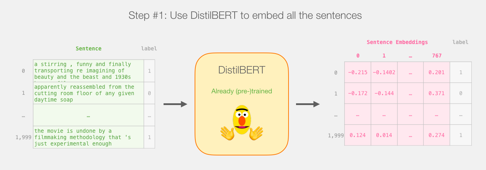
A Visual Guide to Using BERT for the First Time - Jay Alammar, source
Différence majeures:
- Pré-traitement moins central
- Prise en compte du contexte dans la représentation
- Représentation dense
- Matériel computationnel plus lourd
Un mot sur les plongements sémantiques1
On ne se contente plus d’observer la présence de mots, on cherche à identifier leur sens dans leur contexte.

Bertopic dans tout ça ?
Un projet qui facilite la manipulation de ces distances sémantiques pour extraire des thèmes (et faire plein d’autres choses : visualiser, etc.). Ce projet rassemble :
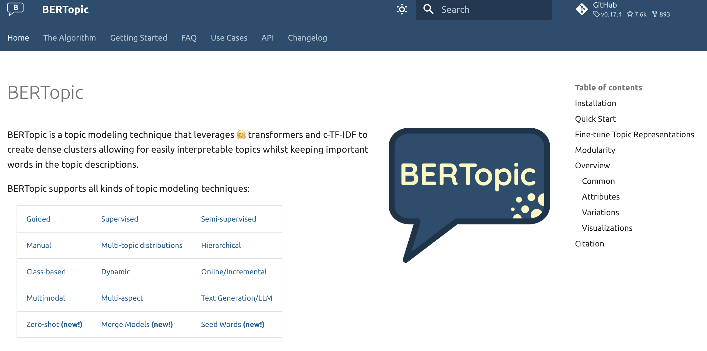
La philosophie du package
- Tirer parti des embeddings / BERT (
sentence-transformers) - Réfléchir la représentation des clusters au-delà du centroid
- Produire graphiques visuelles faciles à intérpéter
- Penser une implémentation modulaire
Ce qu’il fait
Un pipeline de méthodes de machine learning
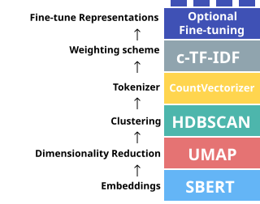
Qui permettent la modularité
Et donc de s’adapter aux enjeux spécifiques du traitement
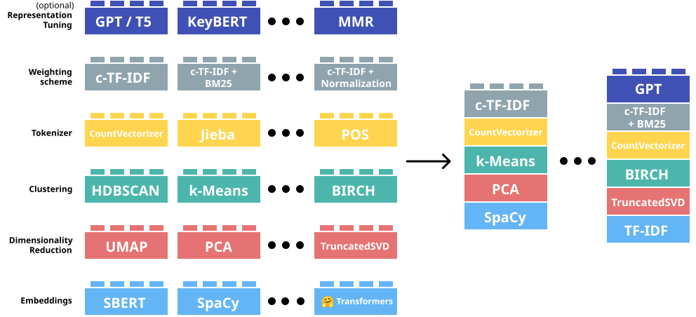
Une adoption en croissance
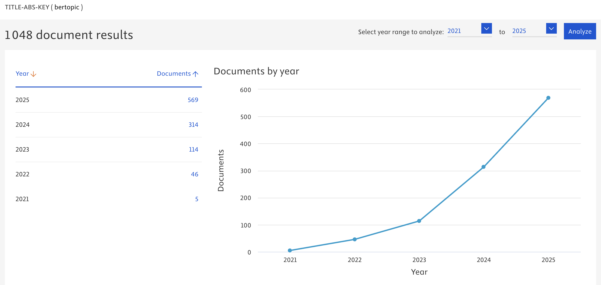
« they valued BERTopic’s ability to uncover hidden connections, emphasizing the need for meaningful, comprehensive analysis tools that support their research objectives and enhance data interpretation » (Kaur et Wallace, 2024, p. 2) (pdf)
Quelques débats … pas toujours très justes
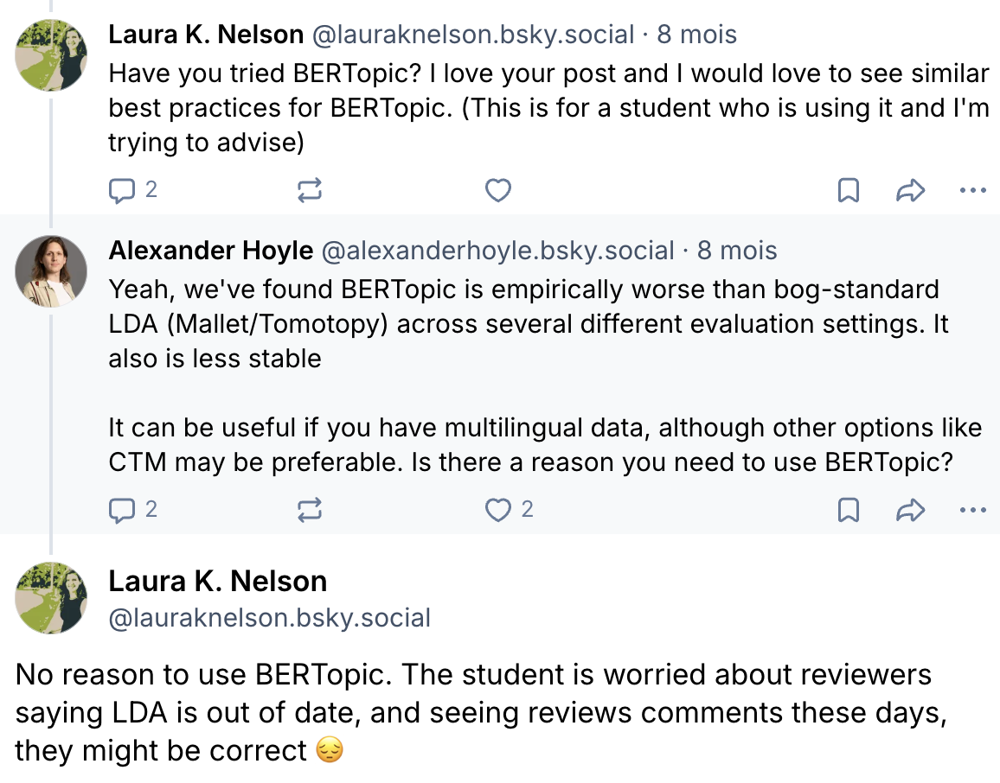
De bonnes raisons de tester Bertopic (au moins)
- Package bien pensé et facile d’usage
- Mobilise la puissance des modèles pré-entrainés
- Hautement configurable pour les cas particulier
- Tire parti des modèles BERT récents
- Propose une documentation et des formations de qualité, en plus d’une communauté active !
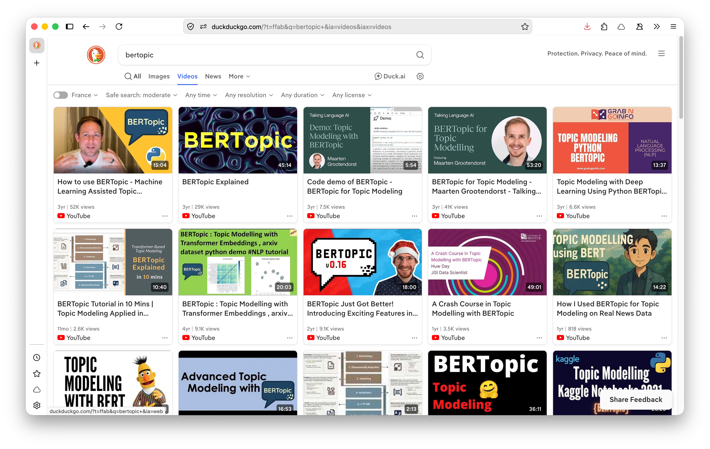
Passer à la pratique
Les ressources
- Un notebook (ouvrir sur Github, ouvrir sur Colab)
- Corpus sur Zenodo
Pour la séance
- Obtenir le notebook
- Si vous travaillez sur votre ordinateur: clonez le dépôt https://shorturl.at/lwzAS
- Si vous travaillez sur Colab: se rendre sur https://shorturl.at/e6B3w
- Si SSPCloud, créez un compte puis un service et téléverser le notebook @emilienschultz Ajouter lien.
- Obtenir les données
- se rendre sur la page Zenodo https://shorturl.at/UxKAk
- Télécharger le fichier:
theses-soutenues-curated-stratified.csvetembeddings.zip - Si local : placer les fichiers dans le dossier de travail
- Si Colab ou SSPCloud: téléverser les fichiers dans l’espace de travail
- Préparer l’environnement virtuel
- lancer la première cellule du notebook qui télécharge les requirements et les installe.
Le cas d’usage
- Un jeu de données public: Thèses soutenues en France depuis 1985
- référence les thèses défendues en France avec un abstract en français et en anglais dans la plupart des cas
- Données textuelles de qualité: peu de retouches à faire dans les textes eux mêmes, format et longueur standardisée. Nota, un travail de nettoyage a quand même été réalisé en amont.
- Des métadonnées présentes: des catégories standardisées sont renseignées pour chaque thèse. Leur qualité est inconnue.
- Par ailleurs, le travail sur des résumés de thèse est pratique courante (Ma et al., 2025; Boelaert et al., 2025)
Retrouver les disciplines explorées par les thèses défendues en France grâce au topic modelling.
Aperçu de la pipeline et de son fonctionnement
Lancer son premier topic model avec BERTopic
import pandas as pd
from bertopic import BERTopic
df = pd.read_csv("./theses-soutenues-curated-stratified.csv")
docs = df["resumes.fr"].sample(1000).to_list()
topic_model = BERTopic(language="french")
topic_model.fit(documents=docs)Voyons ce que ça donne - Retrouver les thèmes
On cherche à afficher les thèmes identifiés, et les représenter avec des mots clefs.
| Topic | Count | Representation |
|---|---|---|
| -1 | 302 | [‘de’, ‘la’, ‘des’, ‘et’, ‘les’, ‘le’, ‘une’, ‘en’, ‘dans’, ‘un’] |
| 0 | 178 | [‘de’, ‘la’, ‘des’, ‘et’, ‘les’, ‘le’, ‘dans’, ‘une’, ‘un’, ‘en’] |
| 1 | 117 | [‘de’, ‘la’, ‘et’, ‘les’, ‘des’, ‘le’, ‘du’, ‘en’, ‘un’, ‘une’] |
| 2 | 108 | [‘de’, ‘des’, ‘la’, ‘les’, ‘et’, ‘une’, ‘le’, ‘un’, ‘pour’, ‘en’] |
| 3 | 100 | [‘de’, ‘des’, ‘la’, ‘et’, ‘en’, ‘les’, ‘été’, ‘dans’, ‘le’, ‘une’] |
| 4 | 49 | [‘de’, ‘des’, ‘et’, ‘les’, ‘la’, ‘en’, ‘du’, ‘une’, ‘le’, ‘sur’] |
| 5 | 48 | [‘de’, ‘et’, ‘la’, ‘les’, ‘des’, ‘une’, ‘en’, ‘le’, ‘dans’, ‘du’] |
| 6 | 41 | [‘la’, ‘de’, ‘et’, ‘le’, ‘du’, ‘les’, ‘une’, ‘des’, ‘en’, ‘dans’] |
| 7 | 31 | [‘la’, ‘de’, ‘et’, ‘les’, ‘le’, ‘des’, ‘en’, ‘du’, ‘langue’, ‘dans’] |
| 8 | 13 | [‘de’, ‘la’, ‘des’, ‘et’, ‘les’, ‘en’, ‘une’, ‘du’, ‘le’, ‘au’] |
| 9 | 13 | [‘de’, ‘la’, ‘et’, ‘un’, ‘les’, ‘pression’, ‘le’, ‘une’, ‘en’, ‘des’] |
Voyons ce que ça donne - Afficher les documents dans un espace 2D
On cherche à afficher les documents dans un espace 2D pour identifier la taille des clusters et leurs position relative.
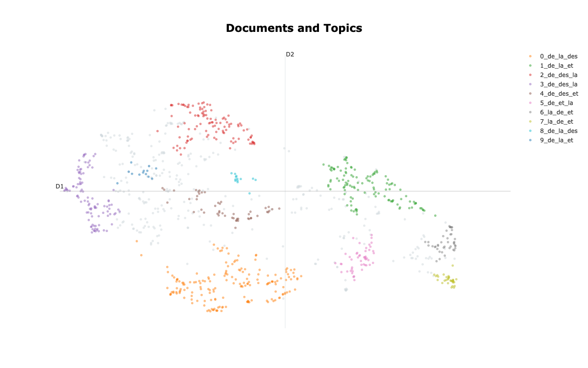
Voyons ce que ça donne - Afficher les mots clefs
On cherche à afficher les mots clefs de chaque thème pour facilement les comparer
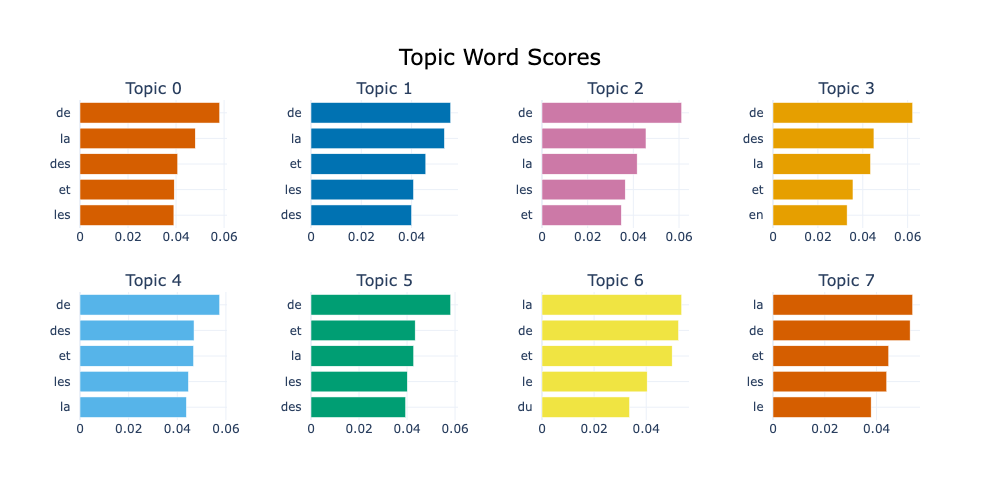
Voyons ce que ça donne - Explorer les interactions entre les thèmes
On cherche à identifier la structure interne au modèle et les proximités entre les thèmes et comment ils s’emboitent.
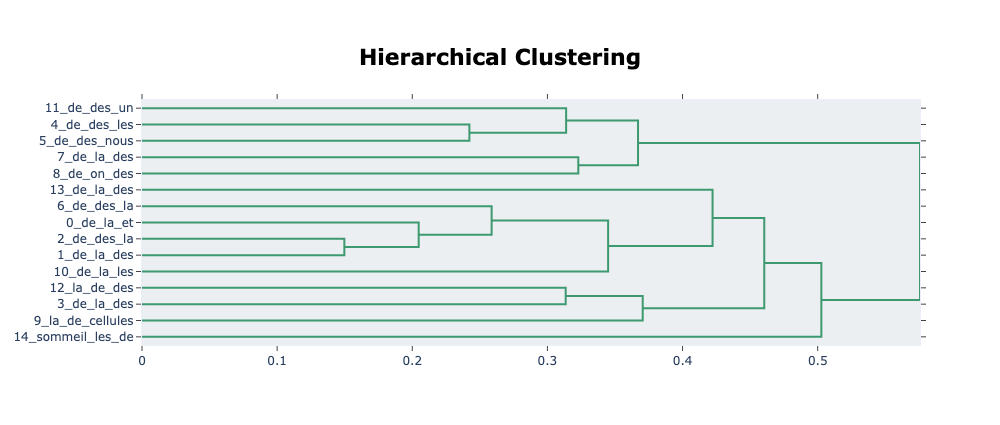
Cette visualisation ouvre la question de la fusion de thèmes qui est rendu possible par BERTopic.
On en parle au cas pas cas.
Voyons ce que ça donne - Tentons d’évaluer le modèle
# code_oai = "ddc:300" # "Sciences sociales, sociologie, anthropologie",
# code_oai = "ddc:340" # "Droit",
# code_oai = "ddc:004" # "Informatique",
# code_oai = "ddc:570" # "Sciences de la vie, biologie, biochimie",
# code_oai = "ddc:540" # "Chimie, minéralogie, cristallographie",
# code_oai = "ddc:620" # "Sciences de l'ingénieur",
# code_oai = "ddc:550" # "Sciences de la terre",
code_oai = "ddc:530" # "Physique",
# code_oai = "ddc:510" # "Mathématiques",
# code_oai = "ddc:610" # "Médecine et santé"
doc_contains_code_oai = df_sample["oai_set_specs"].apply(lambda s: code_oai in s.split("||"))
topics_per_class = topic_model.topics_per_class(docs, classes=doc_contains_code_oai)
topic_model.visualize_topics_per_class(topics_per_class)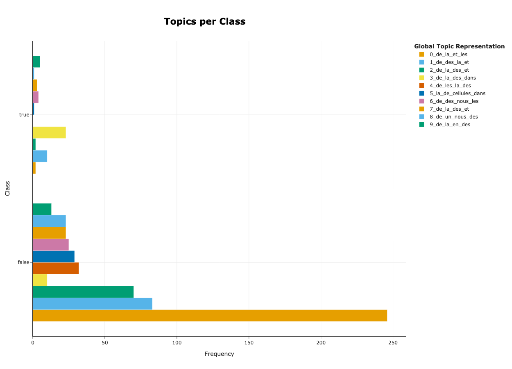
Conclusion de la pipeline vanilla
- On a des outils utiles et qui sont rapides à mettre en place.
- Dans l’état, les sorties sont difficilement exploitables
- mots clefs bruités
- interaction avec le corpus ardue
- Dans l’état il est difficile d’évaluer la pertinence du topic modelling.
Comprendre la pipeline pour obtenir de meilleurs résultats
Après affinage, on peut obtenir des résultats très satisfaisant !
Après affinage et vérification, on obtient les résultats suivants (notebook final: https://shorturl.at/YXqJ2) :

Rappel de la pipeline
Embeddings avec SBERT
Le nerf de la guerre: la représentation sémantique des textes.
- Hyperparamètres impliqués: modèle de plongement
- Objectif: Représenter les données textuelles en vecteurs qui permettent de rapprocher des documents sémantiquement proches.
- Technique employée: Sentence Transformers (SBERT), un package Python maintenu par HuggingFace. D’autres techniques sont possibles
Down the rabbit hole: HuggingFace c’est quoi ?
- 🤗 HuggingFace: Entreprise privée qui se place comme une plateforme d’échange autour du NLP et du Machine Learning
- Qu’est ce qu’on y échange:
- Des modèles à poids libres: possibilité de téléverser et télécharger des modèles, explorer les modèles en fonction de la langue la tâche etc. ainsi que consulter des benchmarks.
- Des données: possibilité de téleverser et télécharger des données.
- Des conseils d’implémentation: à travers des tutoriels, des projets exemple, de la documentation mais aussi des articles et un forum actif.
- Qu’est ce qu’on peut y faire de plus?
- Entraîner des modèles sur leur matériel
- Héberger des modèles d’inférence sur leur matériel
Down the rabbit hole: Modèles de plongement c’est quoi ?
Avec les mains: un modèle est une fonction qui accepte des textes et renvoie une représentation numérique qui encapsule la sémantique du texte.
Les détails d’importance
- Le pré-traitement des textes: pas de suppression des stop-words ou de la ponctuation. On retire que ce qu’on considère comme “bruit” (balises HTML, emojis, fautes d’orthographe, …)
- La taille des textes: les modèles ont une taille limite de textes admissibles, la fenêtre de contexte.
- La taille des modèle: un gros modèle nécessite une grande puissance de calcul en CPU voire GPU.
- Les tâches de prétraitement: le choix de la tâche d’entraînement et du corpus (langue, domaine) signifie que des modèles pré-entraînés seront plus performants sur certains corpus et certaines tâches et moins sur d’autres: Il faut tester !
Mise à jour de la routine BERTopic
Nouveau notebook avance: https://shorturl.at/m5nyE
On tire avantage du pré-calcul des plongements et on les fournit au topic model:
from datasets import load_from_disk
import numpy as np
ds = load_from_disk(f"./embeddings/all-MiniLM-L6-v2-fr-SBERT")
docs = np.array(ds[f"resumes.fr"]) # 6500 rows
embeddings = np.array(ds["embedding"]) # Shape: 6500 x 768
topic_model = BERTopic(language = "french")
topic_model.fit(documents=docs, embeddings=embeddings)Les résultats sont les mêmes, mais le temps de calcul se voit fortement réduit!
Impact du changement de modèle
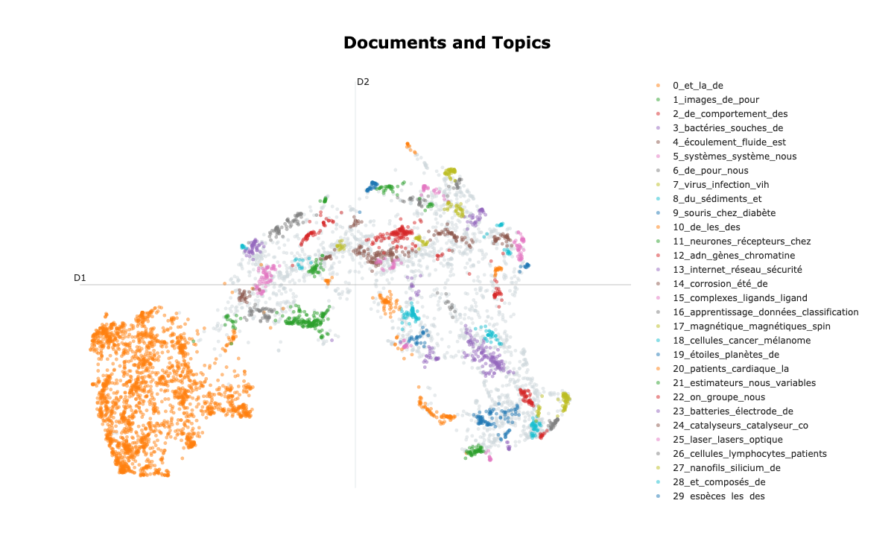
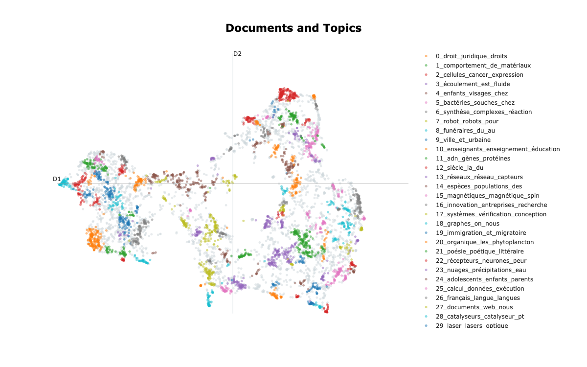
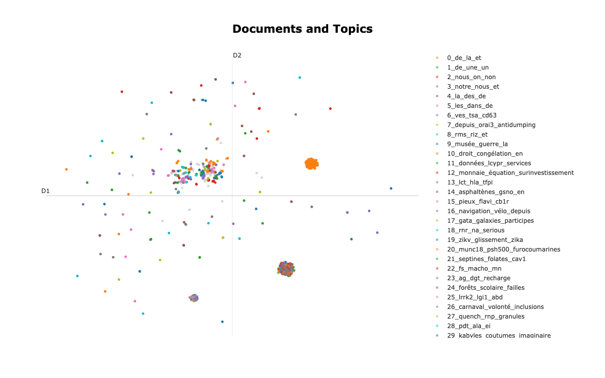
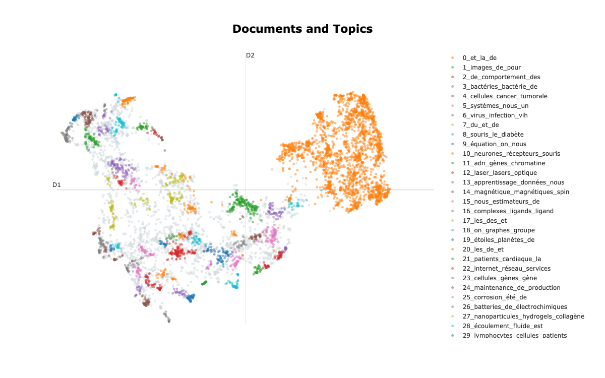
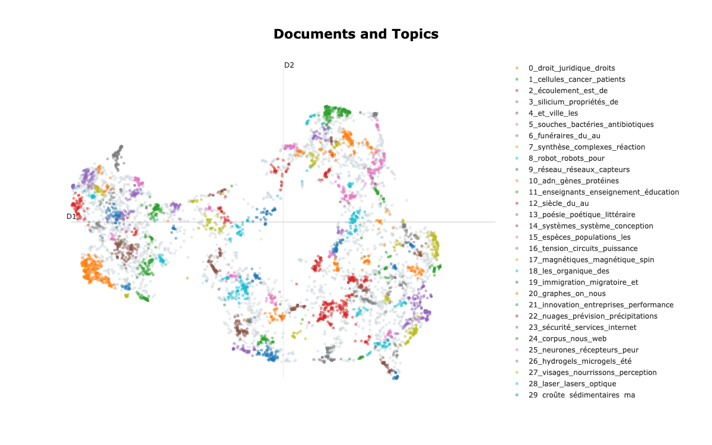
Pour la suite on va utiliser gte-multilingual-base-fr-SBERT.
Réduction de dimensionalité avec UMAP
- Hyperparamètres impliqués:
n_neighorsetn_components(conservermin_dist=0.). - Objectif: Réduire le nombre de dimension (i.e. la taille des vecteurs) pour passer de plusieurs centaines à 2-10.
- Technique employée: UMAP (Uniform Manifold Approximation and Projection), une technique qui cherche à reconstruire un réseau de distances relatives en plus basse dimension de manière itérative. D’autres techniques sont possibles: PCA ou t-SNE.
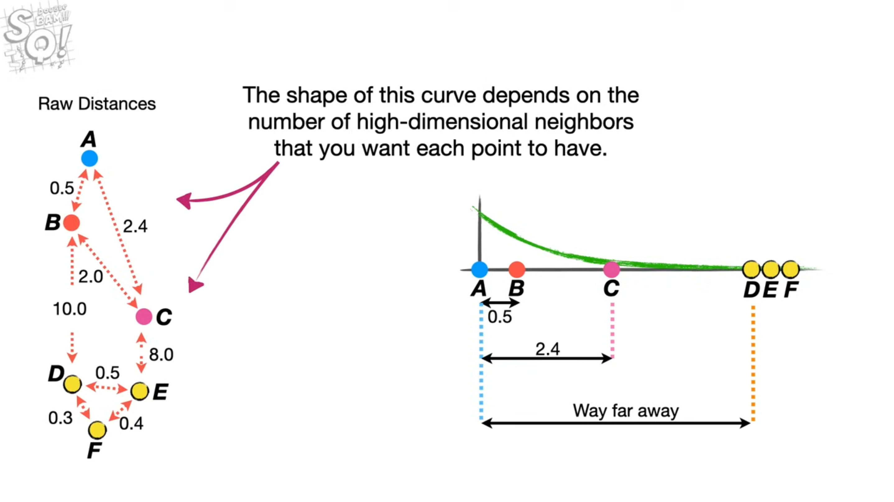
UMAP Dimension Reduction, Main Ideas!!! - StatQuest with Josh Starmer source
Ressource pour jouer avec les paramètres: Understanding UMAP
Mise à jour de la routine BERTopic
from umap import UMAP
ds = load_from_disk(f"./embeddings/all-MiniLM-L6-v2-fr-SBERT")
docs = np.array(ds[f"resumes.fr"]) # 6500 rows
embeddings = np.array(ds["embedding"]) # Shape: 6500 x 768
umap_model = UMAP(
n_neighbors = 50,
# Default parameters
metric = "cosine",
n_components = 5,
min_dist=0.0,
low_memory = False
)
topic_model = BERTopic(language = "french", umap_model= umap_model)
topic_model.fit(documents=docs, embeddings=embeddings)Impact du changement de n_neighbors
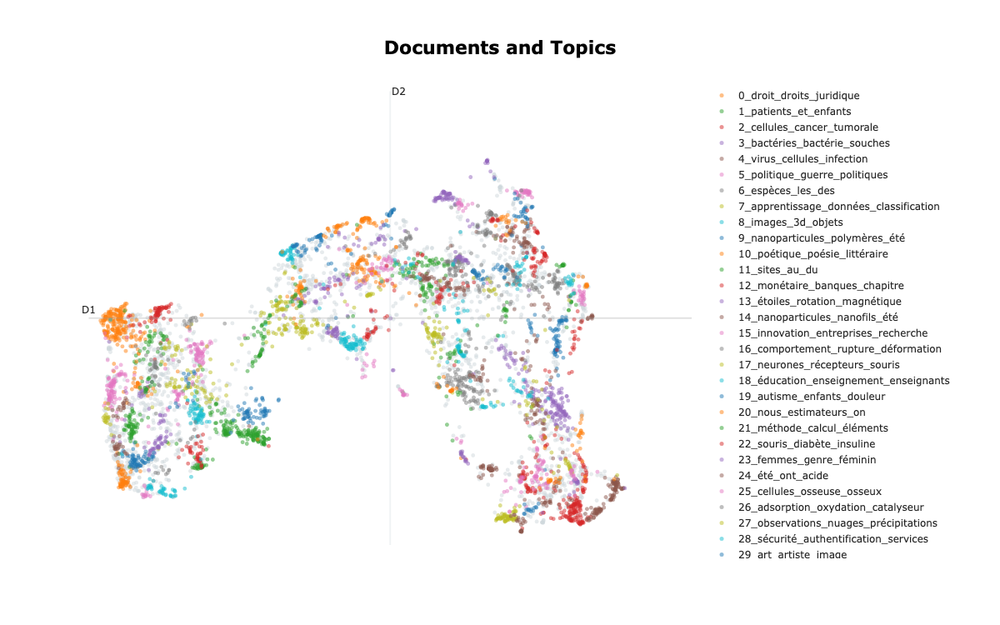
n_neighbors = 5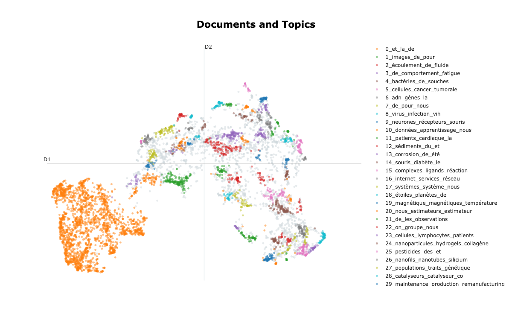
n_neighbors = 15 (default)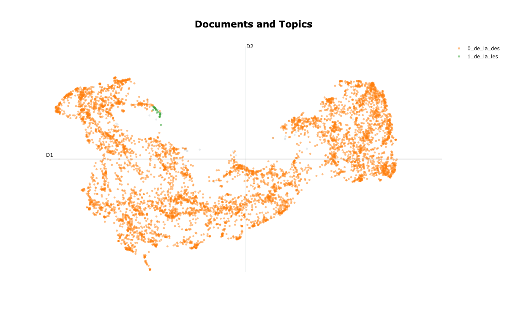
n_neighbors = 300Warning
Attention, en fonction de la taille du corpus, une valeur “raisonnable” de n_neighbors va changer !
🚨Attention🚨 ici la représentation visuelle ne change pas, malgré qu’on ai changé n_neighbors. C’est normal, en réalité il y a 2 UMAP:
- premier UMAP: celui appliqué sur les embeddings, qui réduit à 5 dimensions, avec la valeur de
n_neighborschoisie, et dont les vecteurs résultants (en 5D), et sur lequel on applique l’algorithme de clustering. - deuxième UMAP: celui appliqué lorsqu’on utilise la fonction
topic_model.visualize_documents, qui réduit les embeddings à 2 dimensions, et utilisen_neighbors=10. D’où le fait que la visualisation ne bouge pas.
Impact du changement de n_components
Clustering avec HDBSCAN
- Hyperparamètres impliqués :
min_cluster_size. - Objectif : Créer des groupes à partir de patterns de proximité.
- Technique employée : HDBSCAN une technique de clustering qui cherche des clusters denses sans présupposer de leur forme et en acceptant que certains points soient considérés comme “bruit”. D’autres techniques sont possibles: DBSCAN, K-means.
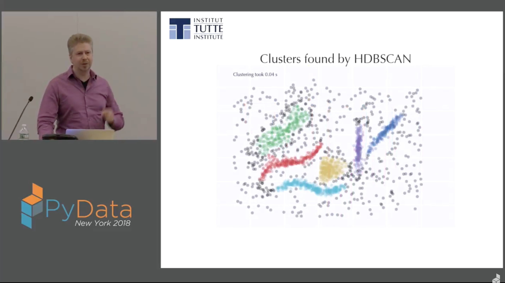
HDBSCAN, Fast Density Based Clustering, the How and the Why - John Healy source
Ressource pour comprendre HDBSCAN: Documentation HDBSCAN - How HDBSCAN Works
Mise à jour de la routine BERTopic
from hdbscan import HDBSCAN
ds = load_from_disk(f"./embeddings/all-MiniLM-L6-v2-fr-SBERT")
docs = np.array(ds[f"resumes.fr"]) # 6500 rows
embeddings = np.array(ds["embedding"]) # Shape: 6500 x 768
hdbscan_model = HDBSCAN(
min_cluster_size=50,
# Default parameters
prediction_data=True
)
topic_model = BERTopic(language = "french", hdbscan_model=hdbscan_model)
topic_model.fit(documents=docs, embeddings=embeddings)Impact de min_cluster_size
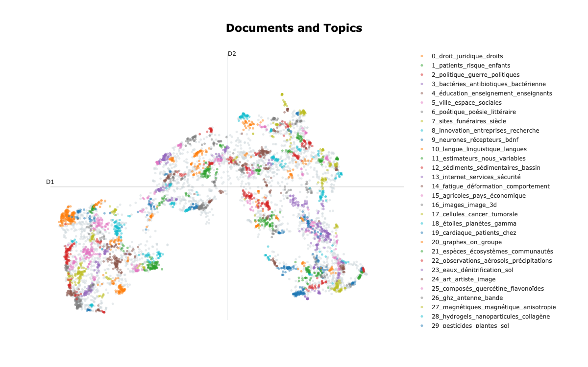
min_cluster_size = 5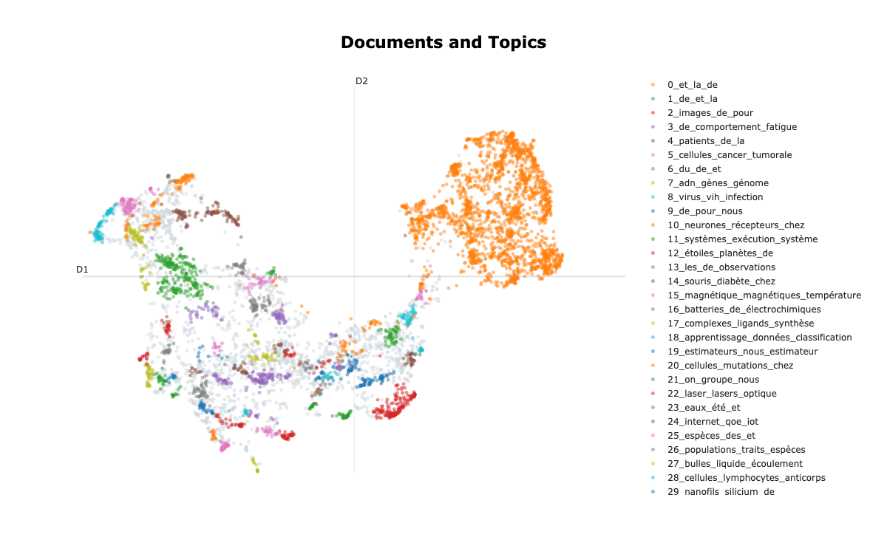
min_cluster_size = 10 (default)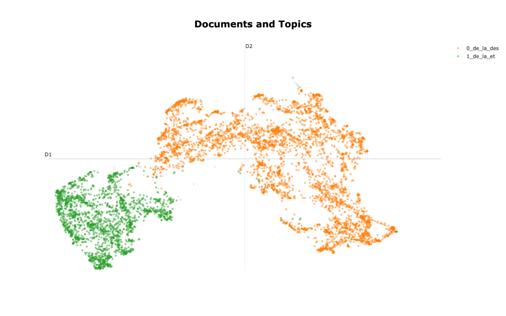
min_cluster_size = 50Warning
Attention, en fonction de la taille du corpus, une valeur “raisonnable” de min_cluster_size va changer !
Proposer des mots clefs avec CountVectorizer et c-TF-IDF
- Hyperparamètres impliqués : Retirer les stop words (
n_gram_range=(1, 1) ou (1,2)). - Objectif : Identifier des mots clefs et les pondérer pour faire ressortir les mots clefs qui sont représentatifs d’un groupe et qui les différentie des autres.
- Technique employée : Compter les mots avec CountVectorizer (scikit learn) et pondérer les scores avec c-TF-IDF. D’autres techniques sont possibles: hormis cas spécial, conserver ces blocs.
Mise à jour de la routine BERTopic
from sklearn.feature_extraction.text import CountVectorizer
from stopwordsiso import stopwords
ds = load_from_disk(f"./embeddings/all-MiniLM-L6-v2-fr-SBERT")
docs = np.array(ds[f"resumes.fr"]) # 6500 rows
embeddings = np.array(ds["embedding"]) # Shape: 6500 x 768
vectorizer_model = CountVectorizer(stop_words = list(stopwords("fr")))
topic_model = BERTopic(language = "french", vectorizer_model = vectorizer_model)
topic_model.fit(documents=docs, embeddings=embeddings)Impact du fait de retirer les stopwords
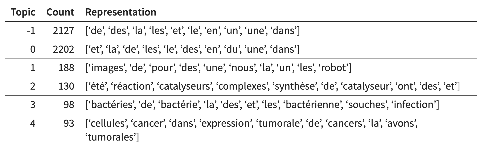
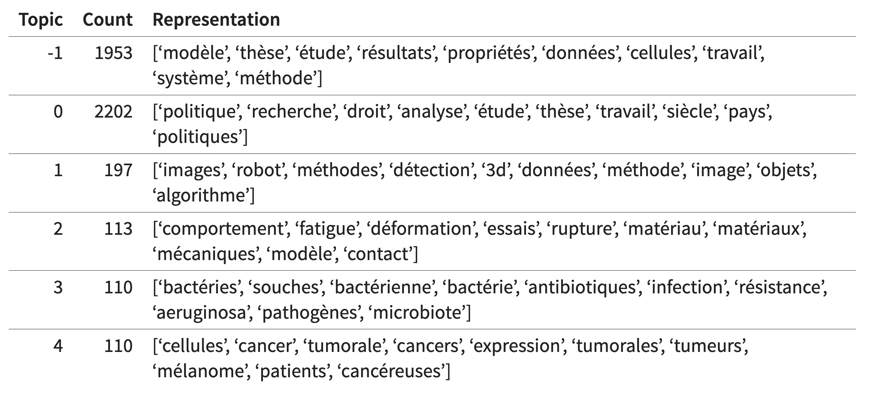
Conclusion
Conclusions
- Évaluation des modèles : C’est long, il n’y a pas de framework standard. Le plus sûr c’est de le faire à la main.
- Reproductibilité : Il y a des techniques pour rendre toute la pipeline! On en discute?
- One (one ?) more thing : Il y a de nombreuses autres modèles BERTopic pour s’adapter à votre cas !
- Vous en voulez encore ? : Tutoriel entier : The General Inquirer in the time of LLMs: a BERTopic tutorial
Annexes
Bibliographie
- Grootendorst, M. (2022). BERTopic : Neural topic modeling with a class-based TF-IDF procedure (Version 1). arXiv. https://doi.org/10.48550/ARXIV.2203.05794
Annexe : Evaluer les topic models
Une histoire compliquée « standard metrics may not reliably reflect human perception of coherence in specialized fields » (Prouteau et al., 2026, p. 8) (pdf)
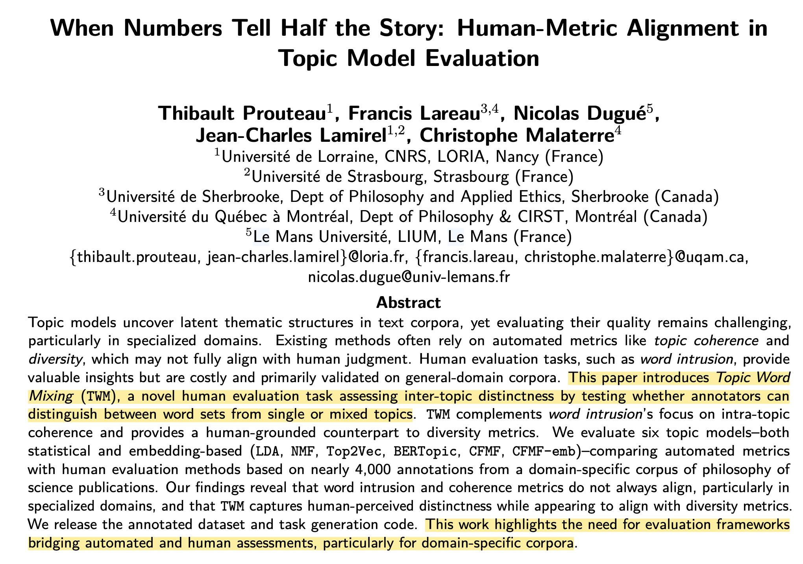
Annexe : Quelques limites/discussion
- Dépendance au modèles :
- biais, zones aveugles, etc.
- comment comparer
- De nombreux paramètres qui nécessitent d’être au clair
- Nécessite des infrastructures pour scale
- « First, BERTopic assumes that each document only contains a single topic which does not reflect the reality that documents may contain multiple topics. » (Grootendorst, 2022, p. 8) (pdf)
Annexe : Utiliser ActiveTigger
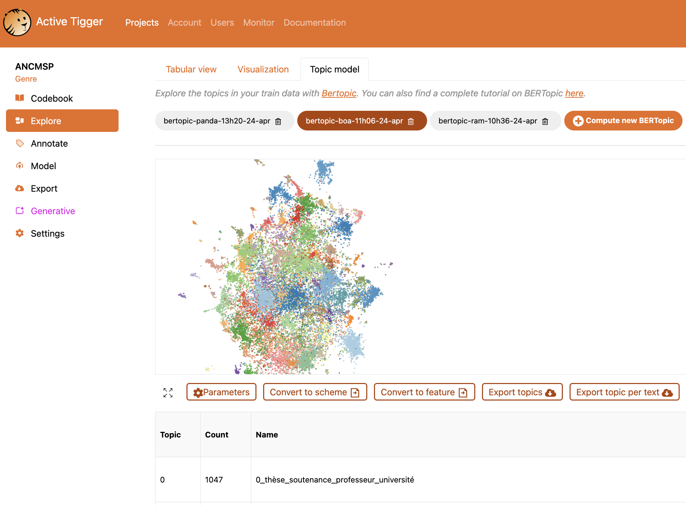
Mettre en forme son corpus
Avant Bertopic
- Des documents dans des formats différents
- Des longueurs variables
- Limite de la fenêtre de contexte
- Du nettoyage à faire
Comment découper son corpus ?